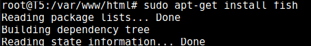
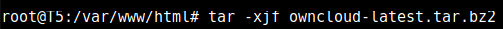
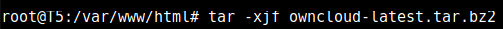

WordPress

En esta Wiki os enseñaremos cómo instalar WordPress en un servidor Ubuntu paso por paso.
Además del proceso de instalación, encontraréis un vídeo explicando el proceso desde cero.
También encontraréis las posibles dificultades que puedan surgir a la hora de la instalación y la puesta en marcha, así como las posibles soluciones.
¿Qué es WordPress?
WordPress es un sistema de gestión de contenidos enfocado a la creación de cualquier tipo de página web. Está desarrollado en el lenguaje PHP para entornos que ejecuten MySQL y Apache, y es software libre.
Su gran popularidad radica en que es una plataforma sencilla pero muy potente que nos ofrece muchas posibilidades para crear, personalizar y llevar a nuestros sitios web al nivel que queramos.
¿Cómo se instala WordPress?
Lo primero que haremos será instalar MYSQL.
Despues escribiremos la contraseña del root dos veces.
Y para acabar actualizaremos.
Lo siguiente que haremos será conectarnos a la base de datos con nuestro usuario root. Para eso usaremos el siguiente comando.
Lo siguiente que haremos sera crear una base de datos con el comando CREATE DATABASE.
Crearemos esta cuenta, configuraremos una contraseña, y le daremos acceso a la base de datos creada previamente. Podemos hacer esto escribiendo los siguientes comandos. Y para finalizar actualizaremos los privilegios con el comando FLUSH PRIVILEGES y con el comando exit saldremos de la base de datos.
Después de salir de la base de datos utilizaremos el comando update.
Instalar Extensiones Adicionales para PHP
Después instalaremos algunas de las extensiones de PHP para utilizar con WordPress.
Nota: Cada plugin de WordPress cuenta con su propio conjunto de requerimientos. Algunos requieren que algunos paquetes adicionales de PHP sean instalados.
Ahora reiniciaremos Apache para que reconozca las nuevas extensiones en la próxima sección.
Ajustar la Configuración de Apache para Permitir Sobre-escritura y Re-escritura para .htaccess
Lo que haremos a continuacion sera habilitar el uso de los archivos .htaccess, adicionalmente, habilitaremos mod_rewrite, el cual es necesario para que los enlaces permanentes de WordPress funcionen correctamente.
Estos archivos los usa Wordpress para comunicarse con el servidor web.
Para hacer esto abriremos el archivo de configuración primario de Apache con este comando.
Dentro del archivo buscaremos el bloque directory y escribiremos AllowOverride All en él.
Guardaremos el archivo y saldremos.
Lo siguiente, será habilitar mod_rewrite para poder utilizar la función de enlaces permanentes de WordPress escribiendo el siguiente comando.

Aprovecharemos y reiniciaremos apache para que implemente los cambios hechos hasta ahora.
Descargar WordPress
Ahora descargaremos Wordpress en una carpeta en la que tengamos permisos (en nuestro caso la instalaremos en la misma que instalamos Apache.)
Una vez terminada la instalación extraiga el archivo comprimido para crear la estructura de directorios de WordPress con este comando:
Ahora utilizaremos el comando chown para cambiar todos los permisos de las carpeta Wordpress utilizando el siguiente comando:
Lo usaremos para que todos los usuarios del grupo tengan permisos.
Completar la Instalación a través de la Interfaz Web
Ahora que la configuración del servidor está completa, podemos concluir el proceso de instalación desde la interfaz web.
En el navegador, vamos al dominio o la dirección IP pública del servidor.
Ahora tendrá que elegir el idioma que quieras para su Wordpress.
Después de elegir el idioma continue pasando las páginas hasta llegar a la mostrada a continuación:
Después de rellenarla pasa la pagina y habrás terminado la instalación.
video
PrestaShop

En esta Wiki os enseñaremos cómo instalar PrestaShop en un servidor Ubuntu paso por paso.
Además del proceso de instalación, encontraréis un vídeo explicando el proceso desde cero.
También encontraréis las posibles dificultades que puedan surgir a la hora de la instalación y la puesta en marcha, así como las posibles soluciones.
¿Qué es PrestaShop?
Prestashop es una plataforma digital que nos permite crear nuestra propia tienda online de manera gratuita.
Este software ofrece más de 310 funciones integradas, incluyendo la gestión de inventario de productos, la navegación por capas, plantillas personalizables, marketplaces, análisis y presentación de informes, webservice, reglas de la promoción, gestión multi-tienda y gestión del retorno. Una de las razones por las que es tan popular es debido a que ofrece las herramientas más importantes de una tienda online de manera automática y sencilla.
¿Cómo se instala prestashop?
Creamos una carpeta con su nombre en /var/www/html/ y descargamos la version de prestashop1.7.4.3.zip, para luego extraer su contenido.
Para poder descomprimir el fichero, necesitaremos del paquete unzip que deberemos instalar.
Extraemos el contenido del paquete que acabamos de descargar en nuestra carpeta en el directorio.
Después de instalarlo borraremos la carpeta install de todas las descargadas.
Llegados a este punto ya podemos abrir un navegador en nuestro equipo e introducir lo siguiente (URL http://ladireccionIpdeNuestroServidor/prestashop), para que podamos seguir el proceso de instalación que os muestro en las siguientes capturas de pantalla.

En el primer paso escogeremos el idioma.
En el segundo paso aceptaremos licencia: Acepto los términos y condiciones arriba indicados.
En el tercer paso comprobaremos que cumplimos: Compatibilidad del sistema.
En el cuarto paso facilitaremos los datos de la tienda.
En el quinto paso indicaremos los datos de la Base de Datos que hemos creado antes y le daremos a comprobar, si todo sale correcto seguimos con instalación.
En el sexto paso ya se instala nuestro Prestashop, veremos una barra de progreso como esta.
OwnCloud

En esta Wiki os enseñaremos cómo instalar OwnCloud en un servidor Ubuntu paso por paso.
Además del proceso de instalación, encontraréis un vídeo explicando el proceso desde cero.
También encontraréis las posibles dificultades que puedan surgir a la hora de la instalación y la puesta en marcha, así como las posibles soluciones.
¿Qué es OwnCloud?
OwnCloud es un programa multiplataforma,muy similar al popular DropBox, el cual al instalarlo sincroniza los archivos que queramos con la nube, a los cuales también podremos acceder desde un dispositivo móvil o cualquier ordenador conectado a internet, donde podremos compartir nuestros archivos públicamente con o sin contraseñas, pero existe una gran diferencia frente a DropBox, OwnCloud se aloja en nuestro propio servidor, con lo que la seguridad y privacidad esta asegurada.
Pero OwnCloud no sólo sirve para sincronizar nuestros archivos, si no que también podemos encontrar herramientas como editor de texto, reproductor o calendario.
¿Cómo se instala OwnCloud?
Nosotros vamos a empezar a instalar una shell conocida como fish.

Para continuar instalaremos Lamp para que Owncloud pueda funcionar.

¿Cambiar la contraseña de root? pon n

¿Quitar los usuarios anónimos? pon y

¿Deshabilitar el login del root remotamente? pon y
¿Eliminar el testeo y acceso a la base de datos de prueba? pon y
¿Recargar los privilegios de las tablas? pon y

Ahora instalaremos las siguientes dependencias de PHP.

Ahora necesitamos habilitar los módulos de Apache2 mod_rewrite y mod_headers para que OwnCloud funcione con normalidad.
Por último editaremos la configuración de Apache2 para que las normas rewrite de OwnCloud funcionen.


Y reiniciaremos Apache.

Instalacion de OwnCloud
Hay que bajar la última versión, extraerla, moverla a la carpeta que le corresponde y darle los permisos adecuados.
 


Ahora vamos a crear la base de datos de OwnCloud con el comando:
mysql -u root –p
Y crearemos la base de datos.
Ahora ya podremos salir y configurar OwnCloud.
Usaremos nuestro navegador web para entrar al servidor, recordad que la ip se consigue con el comando hostname.
Aquí crearemos una cuenta de administrador, dejaremos el directorio de datos tal cual y rellenaremos la configuración de la base de datos de la siguiente manera:
owncloud (nombre de usuario)
contraseña (de la base de datos)
owncloud (nombre de la base de datos)
localhost
Por ultimo hacemos click en completar instalación y habremos acabado.

Problemas y soluciones
Durante la instalacion de OwnCloud cada vez que nos descargabamos los paquetes de PHP se descargaban rotos. La única manera de solucionarlo que encontramos fué volver a instalar todo de cero.